Mladonagubana gorstva
Sierra Nevada, Kantabrijsko gorstvo, Pireneji, Apenini, Alpe, Šarsko-Pindsko gorstvo.
Učenje
Geografski okvir, naravne značilnosti, Sredozemsko morje, sredozemsko kmetijstvo, turizem in izbrani problemi po državah.
Sredozemlje oziroma Mediteran ni isto kot Južna Evropa. Sredozemlje zajema ozemlja na severnih, vzhodnih in južnih obalah Sredozemskega morja v Evropi, Aziji in Afriki. Južna Evropa pa je večji del evropskega Sredozemlja.
| Država | Glavno mesto |
|---|---|
| Portugalska | Lizbona |
| Španija | Madrid |
| Andora | Andorra la Vella |
| Monako | Monako |
| Italija | Rim |
| San Marino | San Marino |
| Vatikan | država znotraj Rima |
| Malta | Valletta |
| Grčija | Atene |
| Ciper | Nikozija |
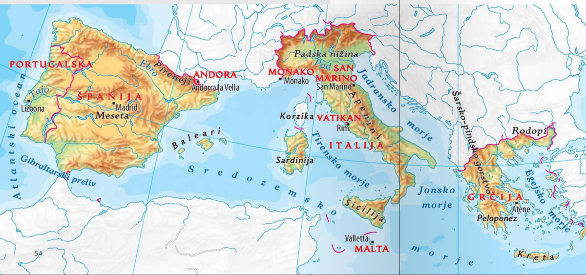
| Naravne enote | Primeri |
|---|---|
| polotoki | Pirenejski/Iberski, Apeninski, najjužnejši del Balkanskega |
| gorovja | Pireneji, Kantabrijsko gorstvo, Sierra Nevada, Alpe, Apenini, Šarsko-Pindsko gorstvo |
| nižine in planote | Padska nižina, Meseta |
| otoki in otočja | Korzika, Sardinija, Sicilija, Kreta, Ciper, Malta; Baleari, Jonski in Egejski otoki |
| morja | Tirensko, Jonsko, Jadransko, Egejsko morje |
Južna Evropa leži na območju stika Afriške in Evrazijske litosferske plošče. Zato so tu mladonagubana gorstva, nastala v terciarju z alpidsko orogenezo, ter potresna in vulkanska dejavnost.
Sierra Nevada, Kantabrijsko gorstvo, Pireneji, Apenini, Alpe, Šarsko-Pindsko gorstvo.
Največja nižina; nastala s tektonskim ugrezanjem v terciarju in zapolnjena z rečnimi nanosi.
Hercinsko nagubana, znižana z zunanjimi silami in kasneje tektonsko dvignjena v planoto.
Etna, Stromboli, Vezuv, Santorin.

Na padavine vplivajo reliefne pregrade in vlažne zračne mase oziroma cikloni iznad Atlantskega oceana in Sredozemskega morja. Pomembna sta islandski minimum ter genovski oziroma sredozemski ciklon.
| Podnebni tip | Značilnosti | Kje |
|---|---|---|
| sredozemsko | vroča suha poletja, mile zime, višek padavin v hladni polovici leta | večina obalnega Sredozemlja |
| kontinentalno polsuho | večja sušnost in celinskost | Meseta |
| kontinentalno vlažno | bolj celinske kotline in notranjost; enakomernejše padavine | kotline in notranjost |
| oceansko | manjše temperaturne razlike, padavine vse leto, zelena pokrajina | SZ Iberskega polotoka ob Biskajskem zalivu |
| gorsko | veliko padavin, nizke temperature | višji deli mladonagubanih gorstev |
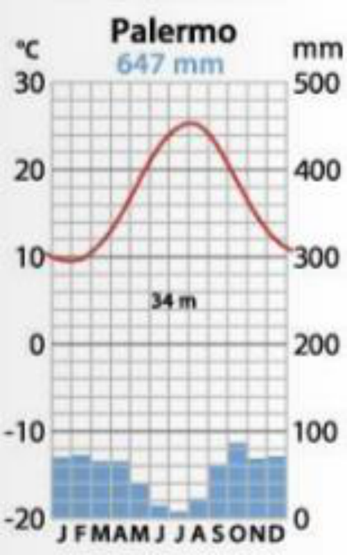
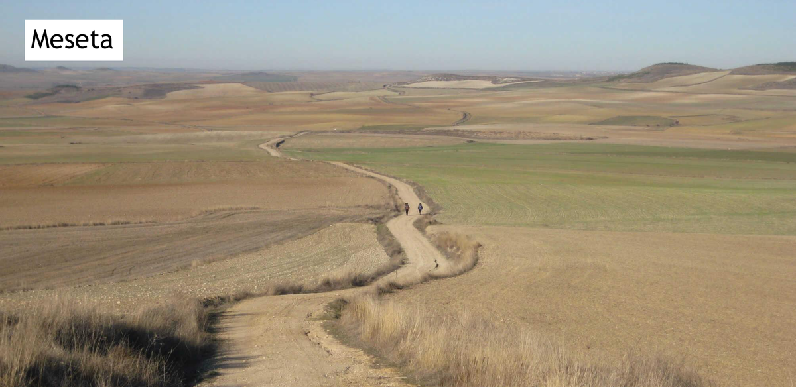
Sredozemsko rastlinstvo je prilagojeno poletni suši in izhlapevanju: trdi, debeli, povoskani listi ali iglice, globoke korenine in trnje. Prvotno rastlinstvo je bil vednozeleni trdolistni gozd, ki je zaradi človekove rabe pogosto degradiral.
Požari so pogosti zaradi daljših poletnih suš, visokih temperatur in človekovega dejavnika. Med ukrepe spadajo protipožarni pasovi, vodni zbiralniki in paša drobnice.
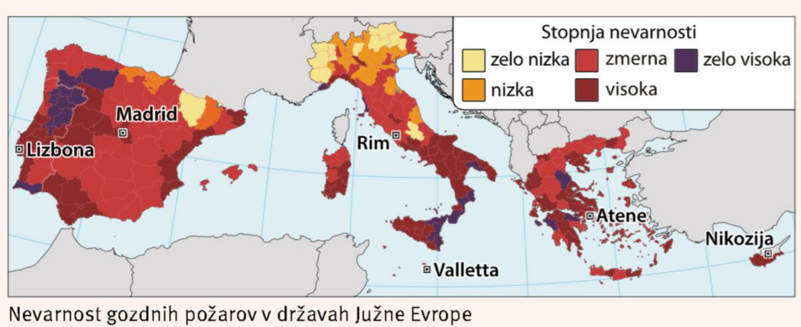
Sredozemsko morje vpliva na podnebje, rastlinstvo, kmetijstvo, gospodarstvo in predvsem turizem. Pomembne so tudi pomorske dejavnosti: ribištvo, gojenje rib in školjk, pomorski promet, ladijski turizem ter črpanje nafte in plina z morskega dna.
200 km dolg umetni prekop v Egiptu; povezuje Sredozemsko in Rdeče morje ter skrajša pot med Evropo in Azijo.
Plastika in mikroplastika, naftni madeži, cvetenje morja, invazivne vrste z balastnimi vodami.
Zaprtost morja, gosta poselitev, komunalne odplake, industrija, množični turizem, kmetijstvo, ladijski promet in globalno segrevanje.
Sredozemlje je najbolj obiskana turistična regija; pomembno zaradi poletnega turizma in velikega deleža BDP v nekaterih državah.
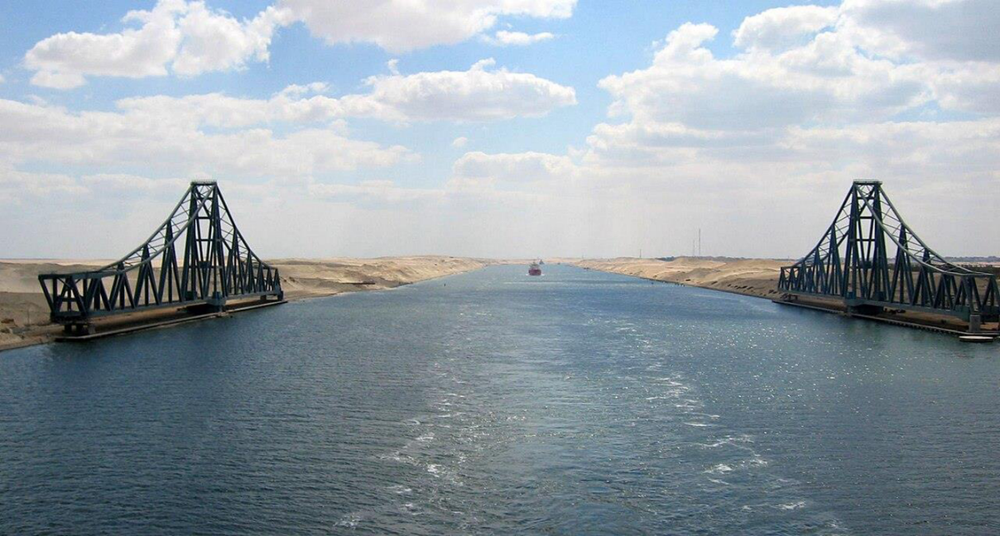
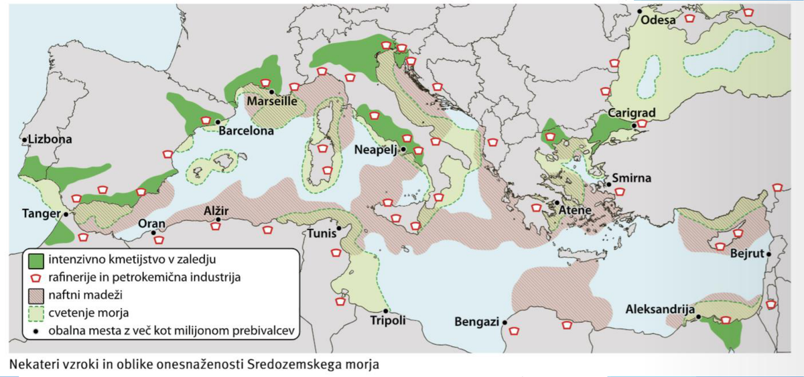
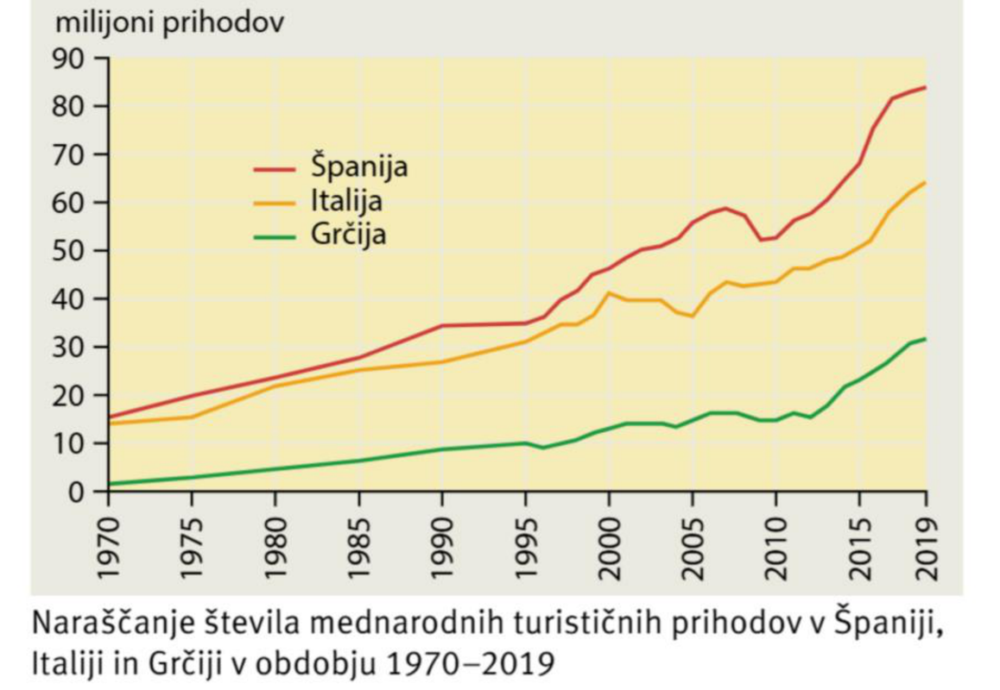
Kmetijstvo je prilagojeno sredozemskemu podnebju s poletno sušo in hribovitemu površju.
| Oblika | Značilnosti | Primeri |
|---|---|---|
| sušno poljedelstvo z ozimnimi žiti | ozimno žito dozori pred poletno sušo; ekstenzivno, nizki donosi | pšenica, ječmen, notranjost Španije in Sicilije |
| trajne grmovne in drevesne kulture | preživijo poletno sušo brez namakanja; pogosto na terasah | vinska trta, oljka; Španija prva pri oljkah in oljčnem olju |
| namakalno kmetijstvo | intenzivna pridelava sadja, zelenjave in agrumov | huerte, obale, dna dolin in kotlin |
| živinoreja | drobnica v sušnih in strmih območjih | ovčereja in kozjereja |
| moderne oblike | rastlinjaki, namakanje, modernizacija, sezonska delovna sila | najbolj razvite v Španiji |
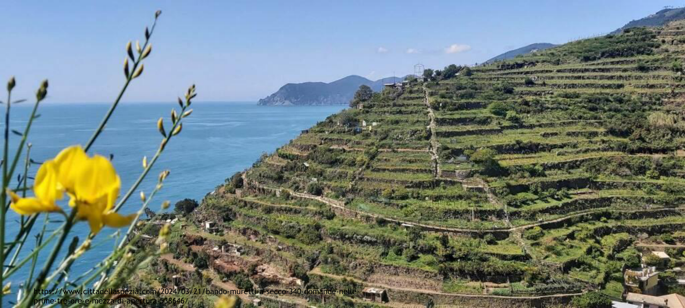
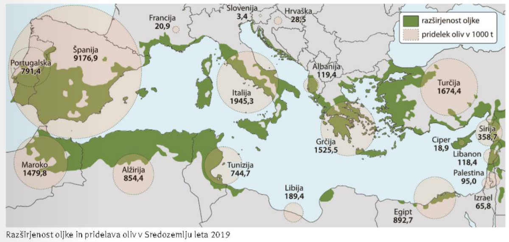
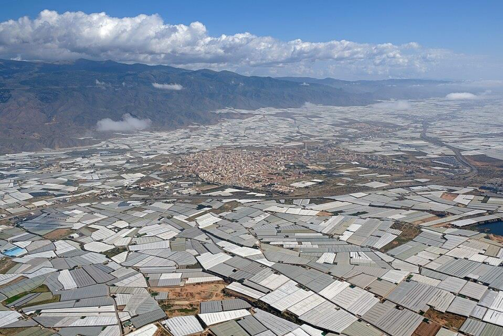
Najpomembnejša območja: Padska nižina za riž, Andaluzija za oljčno olje, sadje in zelenjavo, Murcia kot vrt Evrope.
Demografska slika je neugodna, značilen je negativen naravni prirast. Španija ima v zadnjih desetletjih bolj ugoden migracijski saldo kot Portugalska. Litoralizacija pomeni zgoščanje prebivalstva in gospodarstva na obalah, medtem ko se notranjost Iberskega polotoka prazni.
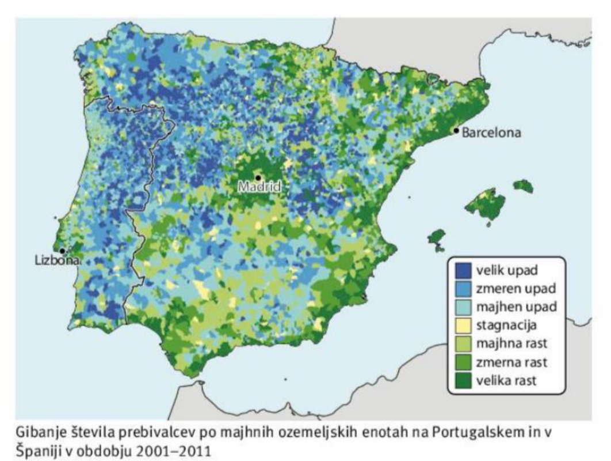
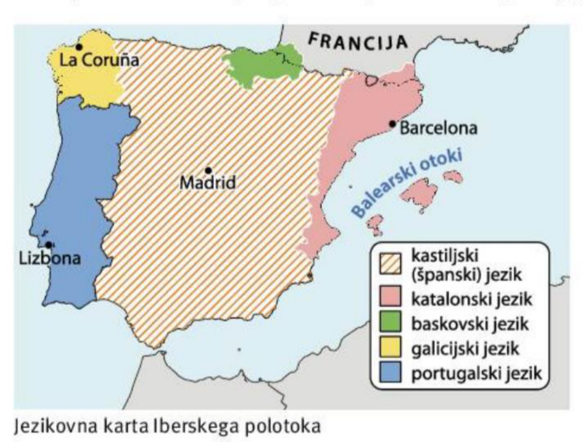
Italija je največje gospodarstvo Južne Evrope, vendar je izrazito razdeljena na bogati sever in revnejši jug. Sever ima kakovostno infrastrukturo, storitve, visoko produktivno kmetijstvo in industrijo. Jug, Mezzogiorno, ima nižjo razvitost, revščino, depopulacijo in težave organiziranega kriminala.
Grčijo je po letu 2008 močno prizadela finančna kriza; sledili so paketi pomoči, varčevanje in reforme, kriza pa je bila formalno zaključena leta 2018. Ciper je razdeljen na grški del, Republiko Ciper, ki je v EU od 2004, in turški del, ki ga priznava samo Turčija.
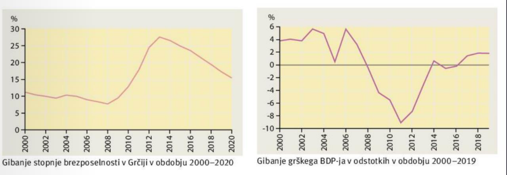
Opiši padavinske in temperaturne značilnosti sredozemskega podnebja.
Sredozemsko podnebje ima vroča in suha poletja, mile zime ter višek padavin v hladni polovici leta. Rastlinstvo je zato prilagojeno suši z debelimi listi, globokimi koreninami in trnjem.
Kaj je litoralizacija in kako se kaže na Iberskem polotoku?
Litoralizacija je zgoščanje prebivalstva in gospodarstva na obalah. Na Iberskem polotoku se notranjost prazni zaradi sušnosti in slabših možnosti za kmetijstvo, obale pa se urbanizirajo in razvijajo zaradi turizma in storitev.
Sredozemsko podnebje ima vroča suha poletja. To je dobro za turizem, hkrati pa povzroča pritisk na vodo, večjo nevarnost požarov in omejitve za kmetijstvo brez namakanja.
Obale Južne Evrope privlačijo turizem, storitve, priseljevanje in infrastrukturo. Notranjost, zlasti sušnejši in manj dostopni deli, se zato pogosto prazni.
Sredozemlje je prometno, turistično in gospodarsko izjemno pomembno, a tudi ranljivo: je skoraj zaprto morje, zato se onesnaženje počasneje razredči kot v odprtem oceanu.
Pri Južni Evropi se pogosto splača odgovor začeti s podnebjem: poletna suša razloži kmetijstvo, požare, turizem, porabo vode in sezonske pritiske na obalah.
Viri dopolnitve: European Environment Agency, Eurostat, Encyclopaedia Britannica.
Klikni kartico, da obrneš odgovor. Te kartice so dodane neposredno na konec teme za hitro ponavljanje.
Osnovna snov je povzeta iz predstavitev 026-030. Dopolnitve razlagajo povezave med tektoniko, podnebjem, kmetijstvom in turizmom. Dopolnitve so označene kot "Dodano za razumevanje" in so povzete iz preverjenih virov: Eurostat, European Environment Agency, Encyclopaedia Britannica, uradne strani EU in drugi preverjeni viri.